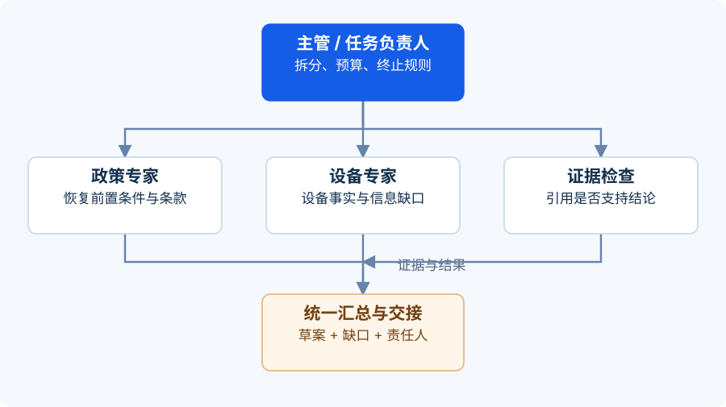

场景：把工单助手画成能执行的流程
IT-2048 已经读入系统。我们需要知道相关政策、确认缺失材料，并准备处理草案。不同架构图都可以画出很多框和箭头，但有用的图必须回答：谁收到任务，谁可以调用工具，结果交给谁，失败后去哪里。
以下五种结构不是互斥的套餐。同一个系统可以先路由，再由主管安排并行专家。先选最小结构，再按实际需求组合。
{kind=link}

结构一：顺序处理
一个步骤产出下一步需要的结果。例如：整理工单事实 → 检索适用政策 → 生成处理草案 → 检查证据引用。
适合存在明确依赖的任务。前一步必须提供可验证的输出，而不是一段“我已经认真分析”的陈述。检索步骤应输出政策编号、版本、相关条款与获取时间。
常见错误是把固定步骤分别包装成 Agent，却没有让任何步骤获得独立决策空间。这可以正常工作，但应诚实地把收益归于工作流拆解。另一个错误是让事实提取器把猜测写成事实，后面所有步骤就会在错误基础上继续加工。
结构二：并行协作
把互不依赖的任务同时交给不同执行单元，再汇总。例如，政策专家读取 KB-MFA-03，设备专家检查用户提交的系统版本与认证器错误信息。两者可以同时开始，结果统一交给草案生成器。
适合检索来源、分析视角或任务范围可以分开的情况。并行之前要约定超时与缺失结果策略：设备信息缺失时可以输出受限草案；关键政策无法取得时，不能默认恢复账户已获允许。
常见错误是让几个 Agent 回答完全相同的问题，然后把多数票当事实。它们可能共享同一条错误资料，产生相同错误。并行应优先带来独立证据或互补工作，而不只是重复意见。
结构三：路由分派
先识别任务类别，再选择后续路径。例如：账号问题进入账号流程，设备问题进入设备流程，办公设施问题进入设施流程。
适合入口统一、后续差异较大的任务。路由结果应包含类别、依据、信息缺口和可否继续。IT-2048 出现“换手机”和“登录失败”时，主路径应落在身份认证；设备资料可以成为子任务，不能仅凭“手机”二字转到设备维修。
常见错误是强迫所有工单进入已有分类。系统应保留“需澄清”路径；复合问题可以先确定主责任方，再拆出关联任务，避免在分类之间无限跳转。
结构四：主管与专家
主管 Agent 根据当前信息拆分子任务，专家在受限范围内分析，主管汇总并判断下一步。与固定并行流程相比，任务数和调用顺序可能随情况变化。
适合问题空间比较开放，但专家职责可以清晰限定的任务。主管向政策专家发出的任务应是“核对 MFA 恢复的前置条件并返回条款证据”，而不是“帮我处理一下这个用户”。
常见错误是把主管当成万能兜底。主管也会误解材料，所以必须有预算、完成条件和外部检查。专家之间出现冲突时，主管不能用措辞更自信的一方覆盖证据更强的一方。
结构五：交接控制权
当前 Agent 把后续处理责任移交给另一个 Agent，接手方成为当前负责人。例如，通用服务助手识别出身份恢复问题后，将任务交给身份服务助手，连同已知事实和未解决问题一起转交。
这与“调用专家后等它回复”不同：调用专家时，原负责人仍持有任务；交接时，当前责任方改变。交接不会自动提升权限，接手方仍受自己的工具授权约束。
适合流程跨越明确职责边界的场景。常见错误是只转发最后一句话，导致用户反复解释；或者双方都认为对方负责，工单因此无人推进。
本课产出：一张能落地的结构表
| 结构 | 控制方式 | 适合 IT-2048 的用法 | 必须明确的规则 |
|---|---|---|---|
| 顺序 | 前后依赖 | 事实、证据、草案、检查 | 每步输入与输出 |
| 并行 | 独立执行后汇合 | 政策核对与设备分析 | 超时与部分结果处理 |
| 路由 | 根据类别选路径 | 进入身份认证主路径 | 无法分类时如何澄清 |
| 主管与专家 | 动态分派和汇总 | 按信息缺口追加专家 | 预算与终止条件 |
| 交接 | 转移当前责任方 | 从通用支持转身份服务 | 接收确认与唯一负责人 |
一个适合入门的组合是：固定路由确定账号流程，随后并行读取必要资料，汇总草案，进入人工处理队列。关键分支由程序判断，不必全部交给另一个模型决定。
练习：修好这张“无限开会”的图
原设计是：主管 → 政策专家 → 设备专家 → 主管；主管觉得不够完善，就再走一遍，直到大家都同意。请指出两个问题，并提出终止条件。
展开参考答案 · 先试着自己回答
第一，两个核对任务通常可以并行，串联会增加等待；如果设备分析确实需要政策结论，则应保留这项依赖，并写清理由。第二，“大家都同意”不可验证，也容易产生无休止循环。
可以将完成条件设为：存在适用政策及版本，已知事实与缺失材料已列明，草案通过格式与证据检查。最多允许一次补充检索；仍缺独立身份核验则标记“等待人工核验”，不让专家继续讨论以填补不存在的证据。预算耗尽或政策冲突时转人工决策，并保留已有结果。